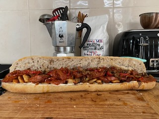

The Sandwich

Ciabatta, Chorizo, Halloumi, Peppers, Onions, Tzatziki
Super simple and adaptable sandwich recipe.
Ingredients
-
Ciabatta (ideally homemade subroll, but can be substituted with most
shop bought)
- Chorizo
- Halloumi
- Peppers
- Onions
- Tzatziki
Method
- Pre-heat oven for ciabatta bread, 180 - 200 degrees celcius.
- Finely chop peppers and onions.
- Slice halloumi
-
Shallow fry till soft and add inclusions such as smoked paprika. Low
heat (20mins).
-
Take off heat and transfer to plate with kitchen roll to soak up oils.
- Fry chorizo in same pan till crispy. Low heat.
- Transfer to plate with kitchen roll.
-
Now fry the halloumi in the chorizo oils left in pan, turning
frequently till browned.
- Place bread into oven till crispy on top and warm throughout.
- Slice bread once slightly cooled.
- Transfer all ingredients back to pan to warm up for serving.
-
Spread tzatziki on both open sides of the ciabatta and build your
sandwich.
- Enjoy!